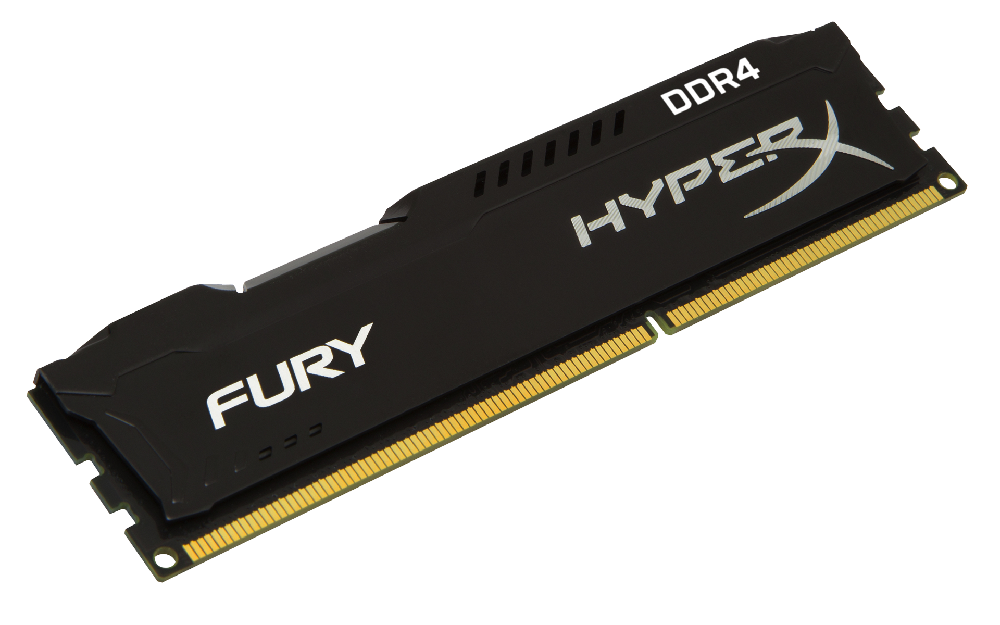

La memoria RAM (Random Access Memory) es encargada de almacenar las instrucciones del procesador de manera temporal. Es una memoria volátil, es decir los datos se pierden al desconectarse de la energía.

Tipos: : A través de los años se han utilizado diferentes tipos de memoria, tales como SRAM, DRAM o SDRAM, sin embargo,
la mas utilizada actualmente es la DDR, que es un tipo de SDRAM del cual existen 4 versiones: DDR, DDR2, DDR3 y DDR4,
cada uno aumentando las capacidades del anterior.
Capacidad de akmacenamiento: Cada tarjeta de memoria tiene una capacidad en la que puede guardar todos sus datos temporales.
Se puede instalar mas de una en cada computadora, por lo que las capacidades se suman.
Frecuencia: Al igual que otros componentes de hardware, la memoria trabaja a una frecuencia con la cual maneja los datos,
usualmente es mucho menor que la del CPU.